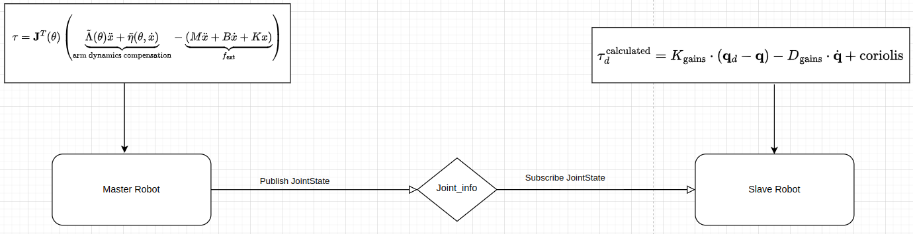
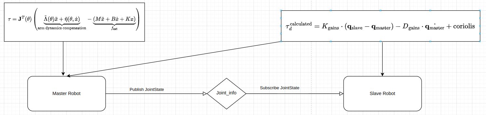
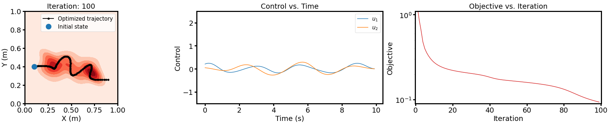

The purpose of this project is to leverage ergodic imitation to learn both desirable and undesirable behaviors. To facilitate effective data collection, I first implemented an impedance control mode for a 7-DoF collaborative robotic arm (Franka) in collaboration with Courtney. Subsequently, I developed a haptic-guided teleoperation system for the Franka robot. This system enables the user to control Franka 1, which operates in impedance control mode, and couples its movements to Franka 2, such that any motion of Franka 1 is mirrored by Franka 2.
Following this, I employed a learning-from-demonstration (LfD) approach to derive robust task definitions from a combination of positive and negative demonstrations. The algorithmic framework for task learning is based on the ergodic metric, a measure of the information content in motion. Finally, I demonstrated the efficacy of this learning approach on real tasks including obstacle-avoidance, cleaning table, and object balancing using the 7-DoF Franka arm.
For the hardware, I used two Franka Emika Robot. As the baseline setup, I first implemented the “No Feedback” condition which is direct joint-position coupling to control the slave robot motion via the master robot. To control the Franka Robot, I used libfranka library, which is a C++ library provided by Franka. For the master robot, I used the impedance control mode I implemented before (more details can be found in this post). For the slave robot, I used a control loop in the libfranka model library. This control loop includes two Callback functions for sending joint-level torque commands and target joint positions. The torque command was computed from the joint impedance control law, and the target joint positions were received from the master Franka robot. For the communication between the master and slave robot, I used ROS2 subscription and publisher to share the JointState information.
To ensure better teleoperation performance, I added Force Feedback. The calculated torque from the slave robot keeps publishing and is received by the master robot. Then the torque on the master robot is a combination of impedance control and the torque reading.
Collecting data using haptic-guided teleoperation. Remember the location of the points, assign positive/negative labels using k-means clustering, and find the center of each cluster to generate a probability density function.
Following is the pipeline of generating density map. First, need to define the workspace
\[ X = [0, L_1] \times \cdots \times [0, L_d], \]
where \( L_i \) is the boundary length of the \( i \)-th dimension. The normalized Fourier basis function is defined over the search space. Denote a state within the search space as \( x = [x_1, \dots, x_d] \in X \), the normalized Fourier basis function is characterized by a \( d \)-dimensional index vector \( k = [k_1, \dots, k_d] \), where each entry of the vector is a whole number \( k_i \in [0, 1, 2, \dots, K] \):
\[ f_k(x) = \frac{1}{h_k} \prod_{i=1}^{d} \cos\left( \frac{k_i \pi}{L_i} x_i \right), \]
where \( h_k \) is the normalization term, ensuring the function space norm of each basis function \( \left[ \int_{\mathcal{X}} f_k(x)^2 dx \right]^{\frac{1}{2}} \) is 1.
Given a spatial probability density function \( p(x) \), I can transform this function as follows:
\[ p(x) = \sum_{k=1}^{\infty} \left( \underbrace{\int_{\mathcal{X}} p(x) f_k(x) dx}_{\phi_k} \right) \cdot f_k(x) = \sum_{k=1}^{\infty} \phi_k \cdot f_k(x), \]
where all the coefficients \( [\phi_k] \) consist of the coordinates of the function \( p(x) \) under the bases \( [f_k(x)] \).
Though the equality only holds in theory when we have an infinite number of basis functions, in practice, we can choose a finite number of basis functions to approximate an infinite-dimensional function \( p(x) \) within a finite-dimensional Euclidean space (a finite number of coefficients).
This transformation from an infinite-dimensional function space to a finite-dimensional vector space is crucial for the ergodic metric. We now verify this transformation below.
It can be considered as an optimal control problem. The iterative linear quadratic regular (iLQR) algorithm follows a gradient descent approach to find a locally optimal solution. Given the current estimation of the control \( u(t) \), at each iteration, iLQR finds the descent direction \( v(t) \) by solving the following ODEs:
\[ u^*(t) \text{ s.t.} = \arg \min_{u(t)} \int_0^T l(x(t), u(t)) \, dt + m(x(T)) \]
\[ \dot{x}(t) = f(x(t), u(t)), \quad x(0) = x_0 \]
The iterative Linear Quadratic Regulator (iLQR) algorithm follows a gradient descent approach to find a locally optimal solution. Given the current estimation of the control \( u(t) \), at each iteration, iLQR finds the descent direction \( v(t) \) by solving the following ODEs:
\[ B(t)^\top p(t) + b(t) + R^\top v(t) = 0 \]
\[ \dot{p}(t) = -A(t)^\top p(t) - a(t) - Q^\top z(t) \]
\[ \dot{z}(t) = A(t) z(t) + B(t) v(t) \]
The initial and terminal conditions are:
\[ z(0) = 0, \quad p(T) = \frac{\partial}{\partial x} m(x(T)) \]
Where:
\[ A(t), B(t), a(t), b(t) = \frac{\partial}{\partial x} f(x(t), u(t)) = \frac{\partial}{\partial u} f(x(t), u(t)) = \frac{\partial}{\partial x} l(x(t), u(t)) = \frac{\partial}{\partial u} l(x(t), u(t)) \]
And Qz and Rv are user-defined regularization parameters.
For the ergodic controller, I model the system as a double-integrator with state \( X = [x, y, \dot{x}, \dot{y}] \) and \( U = [\ddot{x}, \ddot{y}]. \)
For simpler tasks, positive demonstrations alone often suffice. These tasks usually involve straightforward objectives where the robot learns desired behavior effectively through examples of correct actions. Positive demonstrations provide the necessary guidance for the robot to replicate the expected behavior in similar scenarios.
However, for more complex tasks like cleaning desk, incorporating negative demonstrations becomes critical. These tasks typically involve nuanced objectives or constraints and negative demonstrations help the robot learn to avoid these undesired outcomes, complementing the positive demonstrations.
In the case of the balance task, I experimented with using negative demonstrations exclusively. However, the results were suboptimal, indicating that negative demonstrations alone could not fully guide the object to achieve the desired balance. Through further experimentation, I found that the best performance was achieved when both positive and negative demonstrations were used together. In particular, having a higher proportion of negative demonstrations than positive ones proved to be most effective. This approach allowed the robot to understand not only the correct balancing behavior but also the critical mistakes to avoid, resulting in improved task performance.
To implement these learnings, I first generate the robot’s trajectory using an ergodic search algorithm. This ensures that the trajectory optimally explores the workspace while respecting task-specific constraints. The generated trajectory is then executed using the MoveIt framework to control the robot's movements.
Several tests have been conducted to validate this approach. For instance, in a target-reaching task, the robot successfully navigated to a specified location without colliding with any obstacles in the environment. In the case of a cleaning task, the robot’s success was evaluated as a continuous variable. This evaluation considered both workspace coverage (the percentage of the area cleaned) and object avoidance (ensuring no unintended collisions occurred during the task). This dual evaluation metric helped ensure that the robot not only covered the cleaning area effectively but also operated safely within the workspace.
For the balance task, the results were analyzed with similar rigor. The inclusion of both positive and negative demonstrations—especially with a higher emphasis on negative demonstrations—proved to be a robust strategy. This method allowed the robot to learn a nuanced understanding of balancing dynamics, leading to more consistent and reliable performance across different scenarios.
Here is a GIF showing successful finished balance task using both positive and negative demonstrations:

Here is a GIF showing unsuccessful balance task using only negative demonstrations:

Haptic-Guided Teleoperation of a 7-DoF Collaborative Robot Arm With an Identical Twin Master
ICRA 2024 Ergodic Control Workshop
Ergodic imitation: Learning from what to do and what not to do